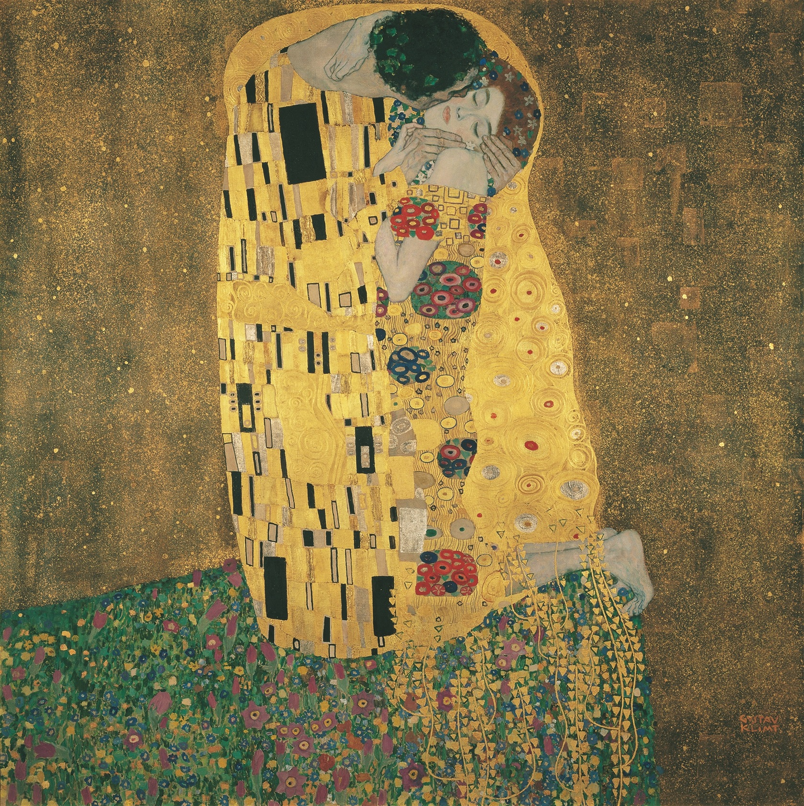

My favorite painting is The Kiss which is an oil painting, with added silver and gold leaf by the artist Gustav Klimt.
My favorite city is Philadelphia.
My favorite thing to do is visit Longwood Gardens and draw the flowers.